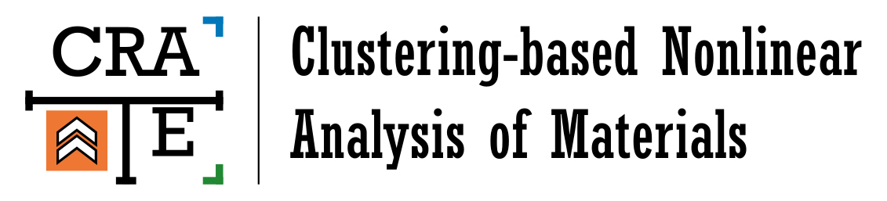

CRATE¶
{kind=link}
Summary¶
CRATE (Clustering-based Nonlinear Analysis of Materials) is a Python program developed in the context of computational mechanics to aid the design and development of new materials. Its main purpose is performing multi-scale nonlinear analyses of heterogeneous materials through a suitable coupling between first-order computational homogenization and clustering-based reduced-order modeling: given a representative volume element of the material microstructure and the corresponding material phase properties, CRATE computes the material’s effective mechanical response when subject to a prescribed macro-scale loading path.
Getting started¶
To get a quick idea of what CRATE is all about, take a look into GETTING STARTED and go through Overview > Installation > Run a benchmark!
Useful Links¶
GitHub repository (source code);
PyPI (distribution package).
Community Support¶
If you find any issues, bugs or problems with CRATE, please use the GitHub issue tracker to report them. Provide a clear description of the problem, as well as a complete report on the underlying details, so that it can be easily reproduced and (hopefully) fixed!
You are also welcome to post any questions, comments or suggestions for improvement in the GitHub discussions space!
Note
Bear in mind that CRATE is a program developed in an academic environment and that I’m currently the only developer as a side project. This means that I’ll do my best to address all the issues, questions and suggestions, but do expect a reasonable time frame! ~ Bernardo P. Ferreira
Credits¶
Bernardo P. Ferreira is deeply thankful to Francisco Pires and Miguel Bessa for supervising the PhD Thesis that motivated the development of CRATE.
License¶
Copyright 2020, Bernardo Ferreira
All rights reserved.
CRATE is a free and open-source software published under a BSD 3-Clause License.